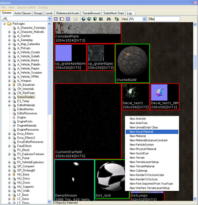
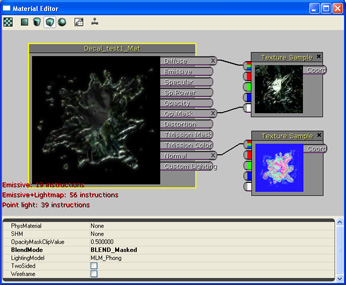
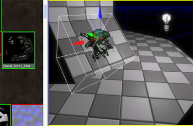
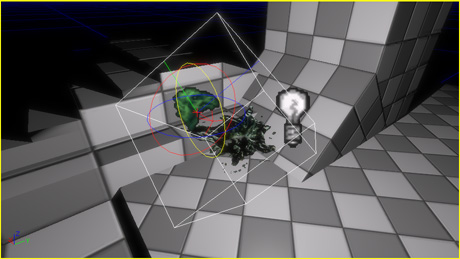
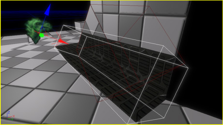
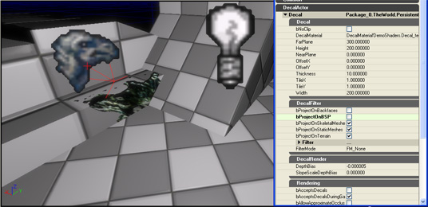
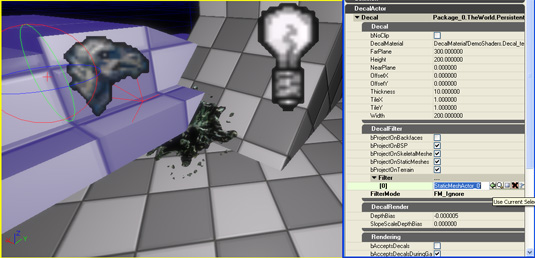
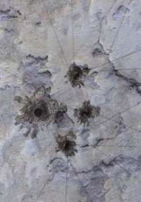

UDN
Search public documentation:
UsingDecals
日本語訳
中国翻译
한국어
Interested in the Unreal Engine?
Visit the Unreal Technology site.
Looking for jobs and company info?
Check out the Epic games site.
Questions about support via UDN?
Contact the UDN Staff
中国翻译
한국어
Interested in the Unreal Engine?
Visit the Unreal Technology site.
Looking for jobs and company info?
Check out the Epic games site.
Questions about support via UDN?
Contact the UDN Staff
Using Decals
Overview
What are decals?
"Static" decals
"Static" decals are decals that are placed in the level in UnrealEd. The runtime cost of a static decal is roughly the same as a static mesh, except that decals have far fewer polys and do not collide, block, or cast shadows."Dynamic" decals
"Dynamic" decals are decals spawned during gameplay -- as a weapon hit effect, for example. Decals spawned in game have a one-time creation cost, after which the per-frame cost is the same as a static decal (just the draw call).Decal Materials
- Decals using transparent materials render differently with respect to fog than other transparent mesh types.
- Decals using lit materials must transform normals computed in the material to the decal tangent frame.
- Shaders that aren't used with decals (e.g. shadows, z-only, velocity, etc) are not compiled for decal materials, meaning that a decal material applied to a non-decal mesh will not correctly e.g. cast shadows, participate in motion blur, etc.
Creating Decal Materials
Like regular materials, Decal Materials are created by right-clicking in the Content Browser and selecting New Decal Material. Select a name for the material and a destination package and press OK. You will see a new decal material object in the Content Browser; double-click on it to open the material editor and configure your material.  Adding decals to the level
Creating decals
The easiest way to add decals to a scene is to select a decal material in the Generic Browser, then hold down 'D' and left click on a surface in the perspective viewport. This will create a decal that projects onto that surface. Alternatively, you can create a decal through the regular right click menu's Add Actor options; however, decals instanced this way will have to be manually oriented. Sizing, tiling and offsetting
Once the decal is created, it can be positioned and oriented using the translation and rotation widgets.  The non-uniform scaling widget controls the width, height and far-plane distance of the decal volume. The Decal Material can be tiled and offset (moved) by setting the OffsetX, OffsetY, TileX and TileY properties. These properties are also linked to the non-uniform scaling widget; shift dragging on the non-uniform scaling widget controls the decal material tiling, while ALT dragging controls the offset. In the image below, a wide tiling decal covers a seam between BSP pieces. Controlling receiving surfaces
The DecalFilter property category contains a list of properties that can be used to control what surfaces the decal can project onto. Checkboxes are provided for controlling whether the decal can project onto BSP, skeletal meshes, static meshes or terrain. In the image below, the decal has been set to not project onto BSP, and thus only the portion of decal on the static mesh is visible.  Decals also have Filter and FilterMode properties that allow per-actor control over what the decal can project onto. In the example below, a static mesh has been added to with a FilterMode of FM_Ignore, meaning only that static mesh is ignored by the decal. For Programmers
Troubleshooting
Conflict with mipmaps
Enabling mipmapping on decal textures can produce artifacts around decal edges:  Here is a detailed description of the problem and its workaround: Decal texture coordinates are computed by projecting the receiving geometry onto the decal image plane. If receiving geometry is clipped against the decal frustum (the default behaviour), no fill exists outside the decal frustum, and the value all decal texture coordinates will be in [0,1]. If the decal component is projecting on terrain or has UDecalComponent::bNoClip set to TRUE, then the decal geometry is not clipped to the decal frustum; rather, the original mesh's vertices are used as 'decal vertices'. As compared to the default behaviour, the 'noClip' path results in extra fill, but a cheaper association time as no clipping is performed. Note that in the 'noClip' approach, vertices that project outside of the decal image plane will have negative-valued texture coordinates, meaning that the address mode of textures used in the decal material need to use clamped texture addressing. The streaking is because the filtering used to compute the lower-level mips is bleeding non-zero colour to an edge texel, and that texel is being streaked across other fragments because of the clamped addressing on the texture. To fix the streaking, open the texture properties for the textures in the decal material and set the bPreserveBorderR/G/B/A flags on the texture, so that transparent border pixels are preserved on lower mips.Not Rendering
If a placed decal isn't showing up in the editor or in game, check the following:- The viewport is set to the 'Lit' viewmode (decals don't show up if there's no lighting).
- The decal is in the same level as the receiver (or duplicated into each level in the case of having to project on receivers from multiple levels).
- bAcceptsStaticDecals is TRUE on the receiving mesh components.
- The decal has the appropriate bProjectsOnBSP/StaticMeshes/etc flags set.
- The decal doesn't have anything in it's decal filter.